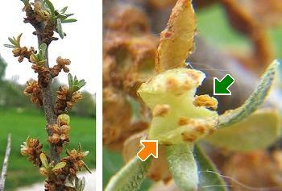
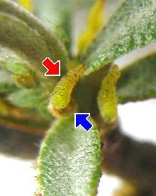

|
| Der Sanddorn blüht von März bis Mai.
Er ist zweihäusig: Männliche und weibliche Blüten wachsen auf getrennten Bäumen.
Sie sind klein und schwer zu erkennen.
Die männlichen Blüten haben 2 Kelchblätter und 4 Staubblätter.
 |  Der Griffel der weiblichen Blüten ragt aus einer Kelchröhre heraus.
Die Blüten werden vom Wind und von Insekten bestäubt.
|